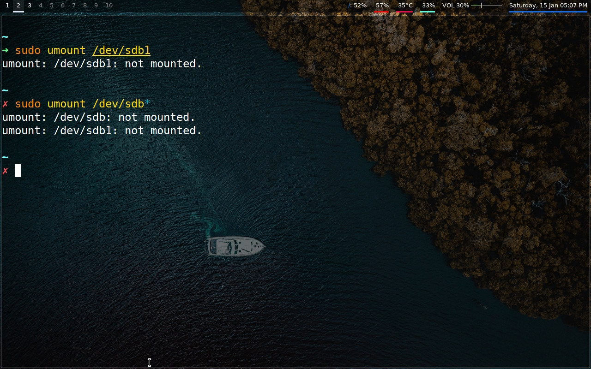
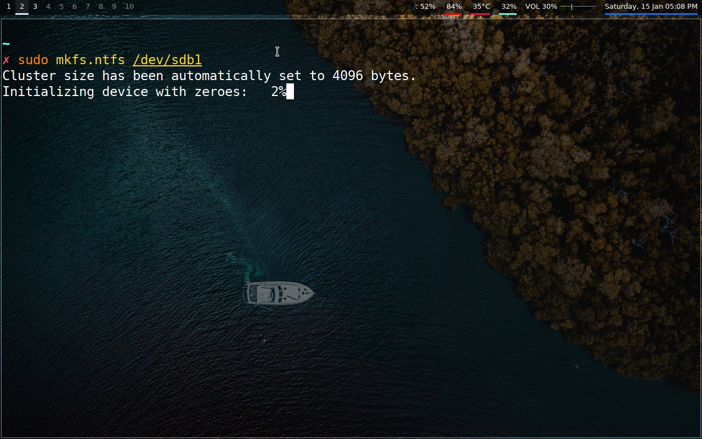
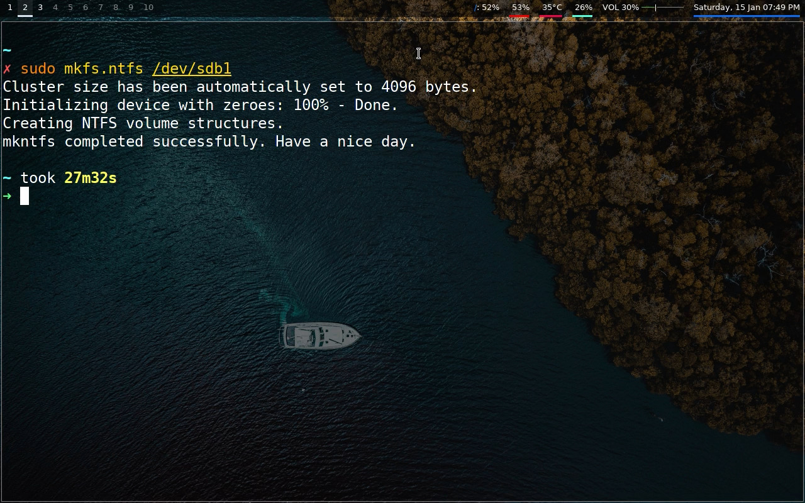
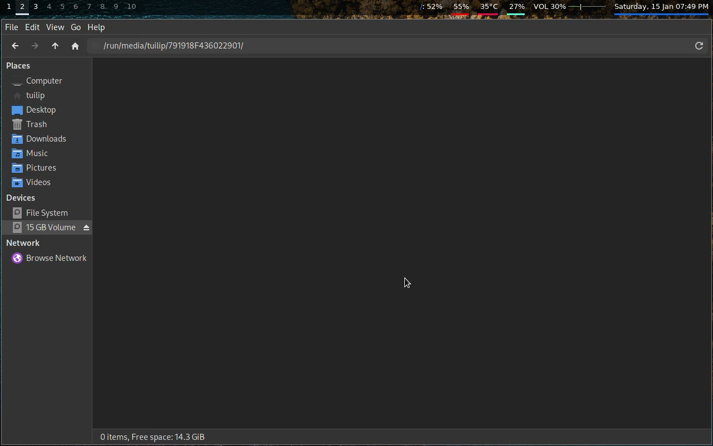

1. We'll first check the name of the drive, in my case, it is /dev/sdb
2. Next, we'll unmount the drive.
3. Now we'll write the filesystem. It may take 5-30 minutes, depending on your drive's read and write speed.
 4. Finally, it is now done.
